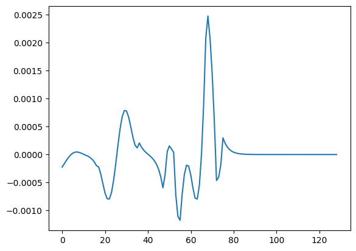
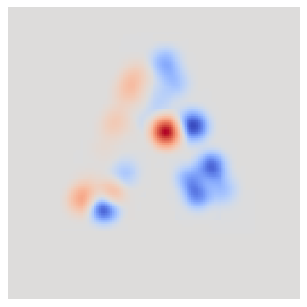

Gradients
[1]:
import RFDT as ivt
import drjit
from drjit.cuda.ad import Float as FloatD, Matrix4f as Matrix4fD
from drjit.cuda import Matrix4f as Matrix4fC
import matplotlib.pyplot as plt
import numpy as np
import torch
import torch.autograd.forward_ad as fwAD
[2]:
# seed all
torch.manual_seed(0)
np.random.seed(0)
[3]:
scene = ivt.Scene()
scene.opts.spp = 128
scene.opts.sppe = 0
scene.opts.sppse = 0
scene.opts.height = 128
scene.opts.width = 128
integrator = ivt.DemoIntegrator()
Scene Setup
[4]:
sensor = ivt.Radar(70, 0.000001, 10000000.)
sensor.to_world = Matrix4fD([[-1.,0.,0.,0.],[0.,1.,0.,0.],[0.,0.,-1.,0.],[0.,0.,0.,1.],])
scene.add_Sensor(sensor)
scene.add_Material(ivt.DiffuseMaterial([0.9, 0.9, 0.9]), "basic")
scene.add_Mesh("data/mesh/A.obj", Matrix4fC([[1.,0.,0.,0.],[0.,1.,0.,0.],[0.,0.,1.,-100.],[0.,0.,0.,1.]]), "basic", None)
with drjit.suspend_grad():
scene.configure()
scene.configure([0])
Parameterization
We set parameter \(p\) to control the mesh’s translation of Z axis.
[5]:
P = FloatD(0.)
drjit.enable_grad(P)
scene.param_map["Mesh[0]"].set_transform(Matrix4fD([[1.,0.,0.,P*100],[0.,1.,0.,0.],[0.,0.,1.,0.],[0.,0.,0.,1.],]))
scene.configure([0])
tau = integrator.cir_diff(scene, 0)
tau2D = np.array(tau)[:,0].reshape(scene.opts.width, scene.opts.height)
tau_tensor = torch.tensor(tau2D)
tau_tensor[tau_tensor == 0] = 1e-6
Create the spatial spectrum surrogate model
[6]:
spectrum_gen = ivt.SpartialSpectrumSurrogate()
Differetation
Forward mode automatic differetation to obtain the gradient of the spectrum.
[7]:
drjit.set_grad(P, 1.0)
drjit.forward_to(tau)
diff_tau = drjit.grad(tau)
diff_tau = diff_tau.numpy().reshape((scene.opts.width, scene.opts.height, 3)).mean(axis=2)
x = tau_tensor
x_grad = torch.tensor(diff_tau)
# Forward Mode AD
with fwAD.dual_level():
dual_x = fwAD.make_dual(x, x_grad)
dual_y = spectrum_gen(dual_x)
y = fwAD.unpack_dual(dual_y).primal
y_grad = fwAD.unpack_dual(dual_y).tangent
Visualization
A side view of the 3D spectrum.
[8]:
plt.plot(y_grad[65,65])
[8]:
[<matplotlib.lines.Line2D at 0x7fb439d9a3d0>]

Normalization for visualization, we want to ensure that a gradient of 0 remains at 0 when plotting.
[9]:
def normalize_image_symmetric(image):
image = np.copy(image)
max_val = np.max(image)
min_val = np.min(image)
positive_mask = image > 0
negative_mask = image < 0
normalized_image = np.zeros_like(image)
if np.any(positive_mask):
normalized_image[positive_mask] = image[positive_mask] / max_val
if np.any(negative_mask):
normalized_image[negative_mask] = -image[negative_mask] / min_val
return normalized_image
Results
Projection of the 3D Spectrum Gradient onto a 2D Surface
[10]:
plt.imshow(normalize_image_symmetric(torch.sum(y_grad[:,:,20:80],dim=2).numpy()), interpolation='none', cmap=plt.cm.coolwarm)
plt.axis('off')
[10]:
(-0.5, 128.5, 128.5, -0.5)
